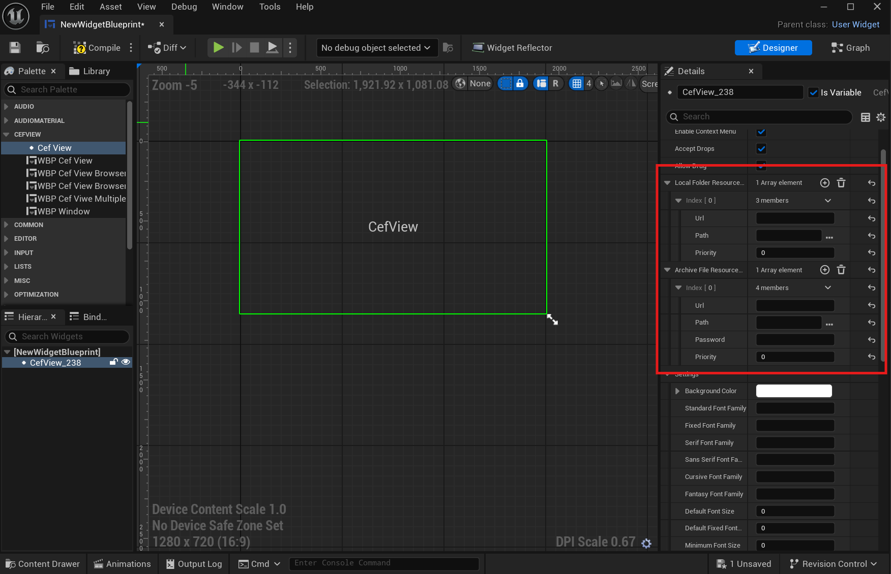

UCefView 提供多种加载 Web 资源的方式。通常只需要设置 Url 属性即可加载在线资源或本地文件资源。
当你需要部署完全自托管的 Web 应用（例如 React、Vue 或 Angular 构建的 SPA）时，**Resource Mapping** 会非常有用。
资源映射允许你将本地目录或 ZIP 压缩包映射到一个自定义域名（例如 https://my-app.local）。之后在 UCefView 中访问这个 URL，就可以像访问真实线上网站一样访问本地资源。
全局映射与实例映射
UCefView 提供两种资源映射作用域：
- 实例映射：
- 通过 C++ 或 Blueprint 动态添加到单个 UCefView 或 SCefView 实例。
- 只影响添加该映射的具体 WebView 实例。
- 适合临时或上下文相关的 Web 内容。
映射类型
UCefView 支持两种本地资源映射：FArchiveFileResourceMapping 和 FLocalFolderResourceMapping。
Archive File Mapping
将本地 ZIP 文件映射到 URL。适合将 Web 资源打包成单个文件进行分发和管理。
例如，你有一个结构如下的 web-app.zip：
D:/packed-site/web-app.zip
|
+-- index.html
+-- assets/
+-- img/
可以创建 FArchiveFileResourceMapping，将 https://my-app.local 映射到这个 ZIP 文件。访问 https://my-app.local/index.html 时，UCefView 会从压缩包中提供内容。
Local Folder Mapping
将本地文件夹映射到 URL。它非常适合开发阶段使用，可以即时看到 Web 文件修改，无需重新打包。
例如，Web 应用构建输出位于：
D:/dev/my-web-app/dist/
|
+-- index.html
+-- assets/
+-- img/
可以创建 FLocalFolderResourceMapping，将 https://my-app.local 映射到 D:/dev/my-web-app/dist/ 目录。
- 警告
- 请始终为 Path 属性提供**绝对路径**。Blueprint 中可使用 Convert to Absolute Path 节点，C++ 中可使用 FPaths::ConvertRelativePathToFull。
如何使用
C++ 示例（实例映射）
FolderMapping.
Url = TEXT(
"https://my-dev-app.local");
FolderMapping.
Path = TEXT(
"D:/dev/my-web-app/dist/");
ArchiveMapping.
Url = TEXT(
"https://packed-app.local");
ArchiveMapping.
Path = TEXT(
"D:/packed-site/web-app.zip");
MyCefView->LoadURL(TEXT("https://my-dev-app.local/index.html"));
UCefView is a UMG widget that embeds a Chromium Embedded Framework (CEF) browser view within Unreal E...
定义 CefView.h:45
void AddLocalFolderResource(const FString &InFolderPath, const FString &InTargetUrl, int32 InPriority=0)
Adds a URL mapping for a local web resource directory, making its contents accessible via a virtual U...
void AddArchiveFileResource(const FString &InArchivePath, const FString &InTargetUrl, const FString &InPassword="", int32 InPriority=0)
Adds a URL mapping for a local archive (.zip) file, making its contents accessible via a virtual URL....
Represents a mapping from an archive file (zip) to a URL for resource loading in the CEF browser.
定义 CefViewTypes.h:257
FFilePath Path
The zip format file containing the resources to be mapped.
定义 CefViewTypes.h:279
FString Url
The target URL to be mapped to.
定义 CefViewTypes.h:268
Represents a mapping from a local folder to a URL for resource loading in the CEF browser.
定义 CefViewTypes.h:172
FDirectoryPath Path
The folder containing the resources to be mapped.
定义 CefViewTypes.h:194
FString Url
The target URL to be mapped to.
定义 CefViewTypes.h:183
Blueprint 示例（实例映射）
也可以在 Blueprint 中为 UCefView 动态添加资源映射。

Blueprint Resource Mapping
API 参考